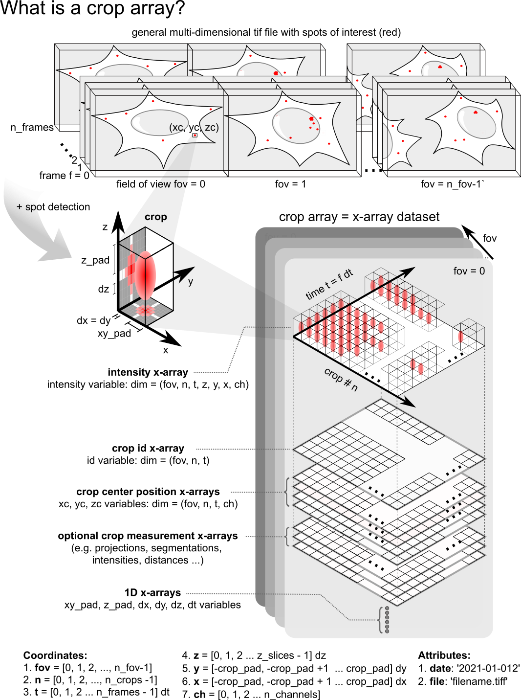

croparray: Module Guide
{kind=link}
Python code to create, manipulate, and analyze an array of crops from TIF images or videos. Created: Summer of 2020 Authors: Tim Stasevich.
- class src.track_array_tools.CropArray(_arr, _df, _crop_pad)
A class for creating and manipulating an array of crops (or regions of interest) that were generated from a multicolor TIF video. Individual crops from the video are arranged in a two-dimensional numpy array, where the first dimension corresponds to the the crop number n and the second dimension corresponds to video frame number f in each frame:
n x f array of crops:
—> f frames
crop_11 crop_12 crop_13 … crop_1f | crop_21 crop_22 crop_23 … crop_2f | n crops crop_21 crop_32 crop_33 … crop_3f V … crop_n1 crop_n2 crop_n3 … crop_nf
Parameters – – – – – crop_pad : int
Crop_pad defines the lateral (XY) size of each crop. Crops are squares in the XY-plane of length (2*crop_pad + 1) pixels.
- arrnumpy array
- A 4D numpy array containing the intensity values for a crop array TIF generated from a multicolor 3D TIF video. Dimensions of the crop array TIF are (dimension can be of length 1):
z (axial Z-dimension)
n (number of crops tracked per frame) x crop_dim
f (frame number) x crop_dim
c (channel or color)
- dfpandas dataframe
A pandas dataframe containing the coordinates of each crop in the crop array. The dataframe has 4 columns = [id, f, y, x]: 1. id is the id # of each crop (integer) 2. f is the frame # of each crop (integer) 3. y is the Y-position of each crop center (float) 4. x is the X-position of each crop center (float)
- array_to_crops(arr)
Returns indexable N,T,Z,Y,X,C dimensional crops from crop array with individual crops in array having dimensions crop_dim x crop_dim x Z.
- background_in_mask(crop, mask)
Returns mean intensity within mask region of the inputted crop.
- best_z(crop, **kwargs)
Returns crop Z plane with the max average intensity in a central 3x3 square after applying a bandpass filter. bandpass_cutoffs = [min, max] is an optional argument for the bandpass filter (default = [1,7]).
- best_z_mask(rz, ref_ch, **kwargs)
Using image in ref_ch, returns mask for crop array with best z +/- rz = 1, else 0. z-offset = [z_offset_ch0, z_offset_ch1, …] is an optional integer list to correct for offsets in z.
- binned_array(arr, dts, n_decimals)
Bins columns in a crop array so that rows so they correspond to the same time (within n_decimals). This is useful when different rows were acquired at a different frame rate. Input: (1) crop array to correct; (2) dts is a list of the times between frames, e.g. [100, 100, …], where 100 would correspond to time between columns in 1st row, 88 between columns in second row, …; (2) n_decimals = (…-2, -1, 0, 1, 2, …) correponds to the number of decimals to consider two times equivalent, e.g. -2 would consider t = 123 and t = 100 to both be t = 100. If a row has more than one column element that corresponds to the same time, all but one of the equivalent columns will be eliminated.
- capsule_mask(rx, ry, rz, th, ref_ch, **kwargs)
Returns mask from reference channel ref_ch for crop array with single-pixel width capsule shell of dimensions rx, ry, and rz, thickness th, and centered on best z +/- rz = 1, else 0. nz-offset is an optional argument that is an integer list of form (z_offset_ch0, z_offset_ch1, …)
- cigar_mask(rx, ry, rz, ref_ch, **kwargs)
Returns mask from reference channel ref_ch for crop array with cigars of dimension rx, ry, and rz centered on best z = 1, else 0. nz-offset is an optional argument that is an integer list of form (z_offset_ch0, z_offset_ch1, …)
- coords()
Returns a pandas dataframe containing the ID and coordinates of each crop in the crop array. The dataframe has 4 columns = [id, f, y, x]: 1. id is the ID # of each crop (integer) 2. f is the frame # of each crop (integer) 3. y is the Y-position of each crop center (float) 4. x is the X-position of each crop center (float)
- crop_ID_markers()
Returns a dataframe whose values can be used to label N x T crop arrays in Napari
- crop_IDs()
Returns all the unique crop IDs in the crop array
- crop_dim()
Returns the lateral (XY) size of each crop: 2*crop_pad + 1. Note all crops in the crop array are squares in the XY-plane of length (2*crop_pad + 1) pixels.
- crops()
Returns indexable N x T crops from crop array.
- crops_to_array(crops)
Returns indexable N x T crops from crop array.
- crops_to_array_NxZ(crops)
Converts indexable N x T crops/mask to crops/mask array with dimensions (N x crop_pad) x Z
- cylinder_mask(rx, ry, rz, ref_ch, **kwargs)
Returns mask from reference channel ref_ch for crop array with single-pixel width capsule shell of dimension rx, ry, and rz centered on best z = 1, else 0. nz-offset is an optional argument that is an integer list of form (z_offset_ch0, z_offset_ch1, …)
- data()
Returns a 4D numpy array of dimensions corresponding to intensity data in the n x f crop array tif file: 1. z (axial Z-dimension) 2. n (number of crops tracked per frame) x crop_dim 3. f (frame number) x crop_dim 4. c (channel or color)
- disk_mask_2D(r)
Creates a 2D mask array with disks of radius r in each crop.
- donut_mask_2D(r, th)
Creates a 2D mask array with donuts of radius r and thickness th in each crop.
- find_intensity_runs(df, col_name, **kwargs)
Finds intensity runs in crop array. Inputs: (1) df is a intensity measurement dataframe, e.g. output from measure_intensity_in_mask_df function; (2) col_name is a string that specifies the column name in df in which to search for runs, e.g. ‘Int. Ch. 1 (a.u.)’; (3) th (default 0) is an optional argument that specifies the intensity threshhold for finding runs. Runs will correspond to a series of repeated intensity measurments above the threshhold value; (4) gap = n (default 0) is an optional argument specifying the largest # of frames in a gap between runs. Sequential runs that are separated by n frames or fewer will be merged into a single run; (5) expt (default 0) is an optional string or number specifying the experiment corresponding to dataframe.
- find_translating_spots(intensities, int_threshhold, run_length)
Returns a list of track_ids in which translation above a threshhold intensity and lasting longer than run_length is detected in intensity timeseries
- int_in_mask(arr, mask, **kwargs)
Returns an array of mean intensities in arr within the mask. mask and arr should be 3D (NTZYXC) crop arrays or 2D (NTYXC) crop array. Optional argument is ignore_val (default 0), which is an intensity value in the mask that will be ignored when computing means.
- int_range(arr, sdleft, sdright)
Returns an intensity range list for the inputted crop array arr for visualization. Intensity range is median - sdleft*standard deviation : median + sdright*standard deviation
- int_renorm_by_col(arr, n_sd, top_int)
Returns a crop array in which the intensity in each column is renormlized such that an intensity that is n standard deviations beyond the median is set equal to top_int (keeping zero unchanged).
- int_renorm_by_row(arr, n_sd, top_int)
Returns a crop array in which the intensity in each row is renormlized such that an intensity that is n standard deviations beyond the median is set equal to top_int (keeping zero unchanged).
- local_background_subtract(crop_array, mask_array)
Returns crops after subtracting the background signal measured in masks)
- make_run_layer(run_df, **kwargs)
Highlights regions of crop array that correspond to runs annotated in run_df (which is a dataframe that is the output of the find_intensity_runs command. ch (default 0) is an optional argument taht specifies the channel the layer corresponds to.
- mask_projection(crop_array, mask_array)
Performs max-z projection after applying mask_array to inputted crop_array
- measure_intensity_in_mask_df(arr0, mask, **kwargs)
Returns a dataframe with intensities measured in mask for crop array arr. Optional arguments: (1) renorm_frames = [0,1] (default) is the range of frames to use when renormalizing intensity to; (2) start_frame = 0 (default) is used to measure time such that start_frame corresponds to t=0; (3) dt = 1 (default) is the time between frames in minutes; (4) file = 0 (default) # or string corresponding to file in a filelist the crop array belongs to; (5) replicate = 0 (default) # or string corresponding to the replicate number of the file in the crop array list; (6) exp = 0 (defaul) # or string corresponding to the type of experiment (eg. control would have different number);(7) ch_names = list of channels names (default: ‘Int. Ch. 1 (a.u.)’…); (8) k_pb is a list of exponents for each channel that describe photobleaching in the experiment. If inputted, measured intensities for each channel I_measure are corrected such that I = I_measure/exp(-k_pb). The default values is k_pb = [0, 0, …] (list of length n_channels), so no correction is performed for each channel. (9) ignore_val (default 0), which is an intensity value in the mask that will be ignored when computing means. (10) bg_frames = [0,0] (default) defines a range of frames that defines the background level for the HT curve. This background will be subtracted so HT curve goes to zero. Note the default does nothing by subtracting 0.
- moving_avg(crop_array, n)
Returns a n-frame moving average of the orginal crop_array. Final frames for which the moving average cannot be computed are set to zero.
- n_channels()
Returns number of color channels in the crop array
- n_crops()
Returns the maximum number of crops per frame or timepoint in the crop array
- n_frames()
Returns the number of frames F in the N x F crop array
- plot_array(arr, **kwargs)
Plots a crop array that represents the average row of arr. Optional arguments: (1) xlim = [start, stop] is a list that specifies the what frame to start and stop; (2) dx is the frame step size; (3) fig_size is a tuple that specifies the dimensions of the output image, e.g. (3.5,1); (4) int_range is a list of pairs that specify intensity limits, e.g. for a 2-channel image int_range = [[0,1000],[0,1000]]; (5) out_file is the name of the output .png output file to which image is saved.
- plot_array_avg_row(arr, **kwargs)
Returns a max-z projected single row crop array that represents the average row of arr. Optional arguments: (1) xlim = [start,stop] is a list that specifies the what frame to start and stop; (2) dx is the frame step size; (3) fig_size is a tuple that specifies the dimensions of the output image, e.g. (3.5,1); (4) int_range is a list of pairs that specify intensity limits, e.g. for a 2-channel image int_range = [[0,1000],[0,1000]]; (5) out_file is the name of the output .png output file to which image is saved; (6) ignore_val is the intensity value to ignore in the average (default 0).
- plot_array_row(arr, n_row, **kwargs)
Plots a single row from a crop array that represents the average row of arr. Optional arguments: (1) xlim = [start, stop] is a list that specifies the what frame to start and stop; (2) dx is the frame step size; (3) fig_size is a tuple that specifies the dimensions of the output image, e.g. (3.5,1); (4) int_range is a list of pairs that specify intensity limits, e.g. for a 2-channel image int_range = [[0,1000],[0,1000]]; (5) out_file is the name of the output .png output file to which image is saved. !!! Need to do max projection!
- to_color_mask(masks)
Adds n_channels to mask to make a color version
- z_slices()
Returns the Z dimension in pixels of 3D crops in crop array
- src.track_array_tools.concat_crop_array_vids(ca_vids)
Returns a single, large crop array video made up from a vertical stack of the inputted crop array videos ca_vids = [ca_vid1, ca_vid2, …]. ca_vids should all have the same crop_pad size and number of dimensions (either 3D+color = ZYXC or 2D+color = YXC).
- src.track_array_tools.create_particle_array_video(output_directory, output_filename, video_3D, particles, crop_pad, xy_pixel_size, z_pixel_size, **kwargs)
Creates and saves a particle array video at output_direction/output_filename from a 3D tif video (video_3D) and corresponding particle array dataframe (particles). crop_pad is the effective radius of crops in the generated particle array. xy_pixel_size and z_pixel_size are included to generate an imagej tif file with metadata containing the resolution of the image. An optional argument, homography, is a homography matrix that shifts red (channel 0) pixels so they align with other channels. This will correct for shifts in red and green channels.
- src.track_array_tools.create_track_array_video(output_directory, output_filename, video_3D, tracks, crop_pad, xy_pixel_size, z_pixel_size, **kwargs)
Creates and saves a crop array video at output_direction/output_filename from a 3D tif video (video_3D) and corresponding track dataframe (tracks). crop_pad is the effective radius of crops in the generated crop array. xy_pixel_size and z_pixel_size are included to generate an imagej tif file with metadata containing the resolution of the image. Optional arguments: (1) track_ch is the channel used for tracking, 0 = red, 1 = green, 2 = blue; default is 0 (red) (2) homography is a homography matrix that shifts the track_ch pixels so they align with other channels. This will correct for shifts in red and green channels.
- src.track_array_tools.find_duplicates(mylist)
Find positions of duplicates in mylist that can be deleted.
- src.track_array_tools.flatten(list)
Flatten out a list.
- src.track_array_tools.int_renorm(arr, n, top_int)
Returns a renormalized array in which the intensity bin corresponding to n standard deviations beyond mean is equal to top_int (keeping zero unchanged):
- src.track_array_tools.list_correlate(sig1, sig2, **kwargs)
This calculates the correlation between two equal-length, 1D signals sig1 and sig2 based on Coulon et al, Methods Enzymology: https://www.ncbi.nlm.nih.gov/pmc/articles/PMC6300985/pdf/nihms-1000605.pdf. Optional arguments: (1) mean1 is the global mean of sig1 (default mean1 = np.mean(sig1)); (2) mean2 is the global mean of sig2 (default mean2 = np.mean(sig2)).
- src.track_array_tools.merge_runs(run_list, gap)
Merge runs (or intervals: […[start1,stop1], [start2, stop2], …]) that are seperated by gap or less (e.g. if start2 - stop1 <= gap merged interval is [start1, stop2]).
- src.track_array_tools.my_capsule(cx, cy, cz, rx, ry, rz, volumeX, volumeY, volumeZ, th)
Creates a capsule mask centered at (cx,cy,cz) of thickness (rx+1:rx+2,ry+1:ry+1,rz+1:rz+2) in volumeX x volumeY x volumeZ
- src.track_array_tools.my_cigar(cx, cy, cz, rx, ry, rz, volumeX, volumeY, volumeZ)
Creates an ellipsoid mask centered at (cx,cy,cz) with radii (rx,ry,rz) in volumeX x volumeY x volumeZ
- src.track_array_tools.my_cuboid(cx, cy, cz, rx, ry, rz, volumeX, volumeY, volumeZ)
Creates a cube mask centered at (cx,cy,cz) with radii (rx,ry,rz) in volumeX x volumeY x volumeZ
- src.track_array_tools.my_cylinder(cx, cy, cz, rx, ry, rz, volumeX, volumeY, volumeZ)
Creates a cylindrical mask centered at (cx,cy,cz) with radii (rx,ry) and height 2*rz+1 in volumeX x volumeY x volumeZ
- src.track_array_tools.napari_viewer(arr, spatial_scale, **kwargs)
View crop array w/ napari. Spatial scale must be set. Optional: layer (e.g. mask), markers (e.g. dataframe), and range
- src.track_array_tools.run_lengths(run_interval_list)
Returns length of runs in run_interval_list = [[start1,stop1], [start2,stop2],…] –> [stop1-start2, stop2-start2, …]
- src.track_array_tools.runs_above_threshhold(list, th)
Returns a new list with 0 for elements in list above threshold and -1 otherwise.
- src.track_array_tools.zero_runs(list)
Returns intervals of zero_runs. Eg. list = [0,0,1,1,4,0,0,0] –> [[0,2],[5,8]]